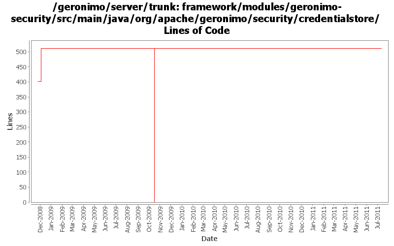

[root]/framework/modules/geronimo-security/src/main/java/org/apache/geronimo/security/credentialstore

| Author | Changes | Lines of Code | Lines per Change |
|---|---|---|---|
| Totals | 29 (100.0%) | 625 (100.0%) | 21.5 |
| djencks | 17 (58.6%) | 621 (99.4%) | 36.5 |
| genspring | 1 (3.4%) | 3 (0.5%) | 3.0 |
| xuhaihong | 1 (3.4%) | 1 (0.2%) | 1.0 |
| jlaskowski | 10 (34.5%) | 0 (0.0%) | 0.0 |
GERONIMO-6060 ClassCastException thrown in RunAsLoginModule, Thanks Shenghao Fang for the patch !
3 lines of code changed in 1 file:
GERONIMO-5057 Use those xmlbeans generated by JAVA EE 6 schema files
1 lines of code changed in 1 file:
GERONIMO-4916 step 2 move sandbox osgi framework into trunk
511 lines of code changed in 7 files:
GERONIMO-4916 step 1 remove old framwork
0 lines of code changed in 7 files:
GERONIMO-4445, GERONIMO-4415 Fix up GeronimoLoginConfiguration and SimpleCredentialStore, use in monitoring console agent
110 lines of code changed in 3 files:
header fixes (Rev, Date)
0 lines of code changed in 10 files: